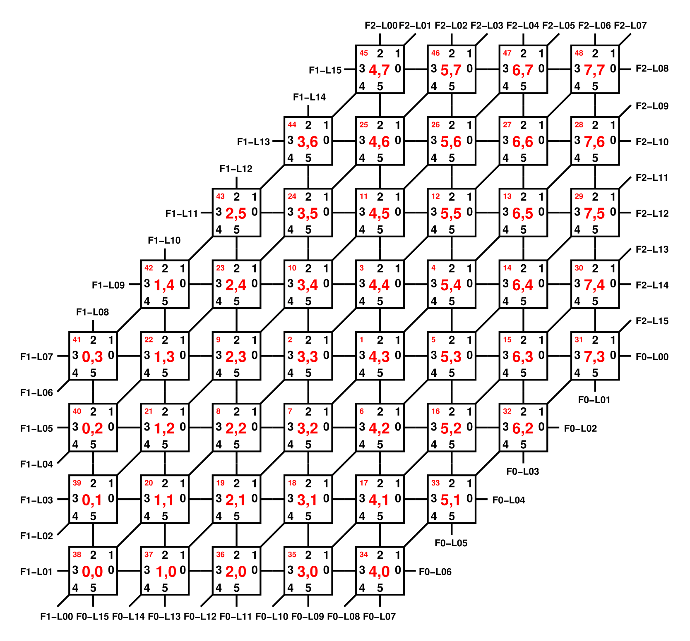

Enum Class FpgaEnum
- All Implemented Interfaces:
Serializable,Comparable<FpgaEnum>,Constable,HasChipLocation
Hard codes all the supported FPGA Link IDs.

Based on the FPGA Diagram- Author:
- Christian-B
-
Nested Class Summary
Nested classes/interfaces inherited from class java.lang.Enum
Enum.EnumDesc<E extends Enum<E>> -
Enum Constant Summary
Enum ConstantsEnum ConstantDescriptionLink 4 on FPGA 0/Bottom From Chip(5,1) towards the East.Link 5 on FPGA 0/Bottom From Chip(5,1) towards the South.Link 2 on FPGA 2/TopRight From Chip(5,7) towards the North.Link 3 on FPGA 2/TopRight From Chip(5,7) towards the NorthEast.Link 0 on FPGA 2/TopRight From Chip(4,7) towards the North.Link 1 on FPGA 2/TopRight From Chip(4,7) towards the NorthEast.Link 15 on FPGA 1/Left From Chip(4,7) towards the West.Link 6 on FPGA 0/Bottom From Chip(4,0) towards the East.Link 7 on FPGA 0/Bottom From Chip(4,0) towards the South.Link 8 on FPGA 0/Bottom From Chip(4,0) towards the SouthWest.Link 10 on FPGA 1/Left From Chip(1,4) towards the North.Link 9 on FPGA 1/Left From Chip(1,4) towards the West.Link 13 on FPGA 0/Bottom From Chip(2,0) towards the South.Link 14 on FPGA 0/Bottom From Chip(1,0) towards the SouthWest.Link 12 on FPGA 2/TopRight From Chip(7,5) towards the East.Link 11 on FPGA 2/TopRight From Chip(7,5) towards the NorthEast.Link 14 on FPGA 2/TopRight From Chip(7,4) towards the East.Link 13 on FPGA 2/TopRight From Chip(7,4) towards the NorthEast.Link 8 on FPGA 2/TopRight From Chip(7,7) towards the East.Link 6 on FPGA 2/TopRight From Chip(7,7) towards the North.Link 7 on FPGA 2/TopRight From Chip(7,7) towards the NorthEast.Link 10 on FPGA 2/TopRight From Chip(7,6) towards the East.Link 9 on FPGA 2/TopRight From Chip(7,6) towards the NorthEast.Link 0 on FPGA 0/Bottom From Chip(7,3) towards the East.Link 15 on FPGA 2/TopRight From Chip(7,3) towards the NorthEast.Link 1 on FPGA 0/Bottom From Chip(7,3) towards the South.Link 4 on FPGA 2/TopRight From Chip(6,7) towards the North.Link 5 on FPGA 2/TopRight From Chip(6,7) towards the NorthEast.Link 2 on FPGA 0/Bottom From Chip(6,2) towards the East.Link 3 on FPGA 0/Bottom From Chip(6,2) towards the South.Link 14 on FPGA 1/Left From Chip(3,6) towards the North.Link 13 on FPGA 1/Left From Chip(3,6) towards the West.Link 9 on FPGA 0/Bottom From Chip(3,0) towards the South.Link 10 on FPGA 0/Bottom From Chip(3,0) towards the SouthWest.Link 12 on FPGA 1/Left From Chip(2,5) towards the North.Link 11 on FPGA 1/Left From Chip(2,5) towards the West.Link 11 on FPGA 0/Bottom From Chip(3,0) towards the South.Link 12 on FPGA 0/Bottom From Chip(2,0) towards the SouthWest.Link 2 on FPGA 1/Left From Chip(0,1) towards the SouthWest.Link 3 on FPGA 1/Left From Chip(0,1) towards the West.Link 8 on FPGA 1/Left From Chip(0,3) towards the North.Link 6 on FPGA 1/Left From Chip(0,3) towards the SouthWest.Link 7 on FPGA 1/Left From Chip(0,3) towards the West.Link 4 on FPGA 1/Left From Chip(0,2) towards the SouthWest.Link 5 on FPGA 1/Left From Chip(0,2) towards the West.Link 15 on FPGA 0/Bottom From Chip(0,0) towards the South.Link 0 on FPGA 1/Left From Chip(0,0) towards the SouthWest.Link 1 on FPGA 1/Left From Chip(0,0) towards the West. -
Field Summary
Fields -
Method Summary
Modifier and TypeMethodDescriptionConverts (if required) this to a simple X, Y tuple.static FpgaEnumFind the enum by chip coordinates and the direction.static FpgaEnumFind the enum by FPGA and link IDs.intgetX()intgetY()static FpgaEnumReturns the enum constant of this class with the specified name.static FpgaEnum[]values()Returns an array containing the constants of this enum class, in the order they are declared.Methods inherited from class java.lang.Enum
clone, compareTo, describeConstable, equals, finalize, getDeclaringClass, hashCode, name, ordinal, toString, valueOfMethods inherited from interface uk.ac.manchester.spinnaker.machine.HasChipLocation
getScampCore, onSameChipAs
-
Enum Constant Details
-
ZERO_ZERO_SW
Link 0 on FPGA 1/Left From Chip(0,0) towards the SouthWest. -
ZERO_ZERO_W
Link 1 on FPGA 1/Left From Chip(0,0) towards the West. -
ZERO_ONE_SW
Link 2 on FPGA 1/Left From Chip(0,1) towards the SouthWest. -
ZERO_ONE_W
Link 3 on FPGA 1/Left From Chip(0,1) towards the West. -
ZERO_TWO_SW
Link 4 on FPGA 1/Left From Chip(0,2) towards the SouthWest. -
ZERO_TWO_W
Link 5 on FPGA 1/Left From Chip(0,2) towards the West. -
ZERO_THREE_SW
Link 6 on FPGA 1/Left From Chip(0,3) towards the SouthWest. -
ZERO_THREE_W
Link 7 on FPGA 1/Left From Chip(0,3) towards the West. -
ZERO_THREE_N
Link 8 on FPGA 1/Left From Chip(0,3) towards the North. -
ONE_FOUR_W
Link 9 on FPGA 1/Left From Chip(1,4) towards the West. -
ONE_FOUR_N
Link 10 on FPGA 1/Left From Chip(1,4) towards the North. -
TWO_FIVE_W
Link 11 on FPGA 1/Left From Chip(2,5) towards the West. -
TWO_FIVE_N
Link 12 on FPGA 1/Left From Chip(2,5) towards the North. -
THREE_SIX_W
Link 13 on FPGA 1/Left From Chip(3,6) towards the West. -
THREE_SIX_N
Link 14 on FPGA 1/Left From Chip(3,6) towards the North. -
FOUR_SEVEN_W
Link 15 on FPGA 1/Left From Chip(4,7) towards the West. -
FOUR_SEVEN_N
Link 0 on FPGA 2/TopRight From Chip(4,7) towards the North. -
FOUR_SEVEN_NE
Link 1 on FPGA 2/TopRight From Chip(4,7) towards the NorthEast. -
FIVE_SEVEN_N
Link 2 on FPGA 2/TopRight From Chip(5,7) towards the North. -
FIVE_SEVEN_NE
Link 3 on FPGA 2/TopRight From Chip(5,7) towards the NorthEast. -
SIX_SEVEN_N
Link 4 on FPGA 2/TopRight From Chip(6,7) towards the North. -
SIX_SEVEN_NE
Link 5 on FPGA 2/TopRight From Chip(6,7) towards the NorthEast. -
SEVEN_SEVEN_N
Link 6 on FPGA 2/TopRight From Chip(7,7) towards the North. -
SEVEN_SEVEN_NE
Link 7 on FPGA 2/TopRight From Chip(7,7) towards the NorthEast. -
SEVEN_SEVEN_E
Link 8 on FPGA 2/TopRight From Chip(7,7) towards the East. -
SEVEN_SIX_NE
Link 9 on FPGA 2/TopRight From Chip(7,6) towards the NorthEast. -
SEVEN_SIX_E
Link 10 on FPGA 2/TopRight From Chip(7,6) towards the East. -
SEVEN_FIVE_NE
Link 11 on FPGA 2/TopRight From Chip(7,5) towards the NorthEast. -
SEVEN_FIVE_E
Link 12 on FPGA 2/TopRight From Chip(7,5) towards the East. -
SEVEN_FOUR_NE
Link 13 on FPGA 2/TopRight From Chip(7,4) towards the NorthEast. -
SEVEN_FOUR_E
Link 14 on FPGA 2/TopRight From Chip(7,4) towards the East. -
SEVEN_THREE_NE
Link 15 on FPGA 2/TopRight From Chip(7,3) towards the NorthEast. -
SEVEN_THREE_E
Link 0 on FPGA 0/Bottom From Chip(7,3) towards the East. -
SEVEN_THREE_S
Link 1 on FPGA 0/Bottom From Chip(7,3) towards the South. -
SIX_TWO_E
Link 2 on FPGA 0/Bottom From Chip(6,2) towards the East. -
SIX_TWO_S
Link 3 on FPGA 0/Bottom From Chip(6,2) towards the South. -
FIVE_ONE_E
Link 4 on FPGA 0/Bottom From Chip(5,1) towards the East. -
FIVE_ONE_S
Link 5 on FPGA 0/Bottom From Chip(5,1) towards the South. -
FOUR_ZERO_E
Link 6 on FPGA 0/Bottom From Chip(4,0) towards the East. -
FOUR_ZERO_S
Link 7 on FPGA 0/Bottom From Chip(4,0) towards the South. -
FOUR_ZERO_SW
Link 8 on FPGA 0/Bottom From Chip(4,0) towards the SouthWest. -
THREE_ZERO_S
Link 9 on FPGA 0/Bottom From Chip(3,0) towards the South. -
THREE_ZERO_SW
Link 10 on FPGA 0/Bottom From Chip(3,0) towards the SouthWest. -
TWO_ZERO_S
Link 11 on FPGA 0/Bottom From Chip(3,0) towards the South. -
TWO_ZERO_SW
Link 12 on FPGA 0/Bottom From Chip(2,0) towards the SouthWest. -
ONE_ZERO_S
Link 13 on FPGA 0/Bottom From Chip(2,0) towards the South. -
ONE_ZERO_SW
Link 14 on FPGA 0/Bottom From Chip(1,0) towards the SouthWest. -
ZERO_ZERO_S
Link 15 on FPGA 0/Bottom From Chip(0,0) towards the South.
-
-
Field Details
-
direction
Direction of the link as it comes out of the source Chip. -
fpgaId
ID of the FPGA. -
id
public final int idID of the FPGA link.
-
-
Method Details
-
values
Returns an array containing the constants of this enum class, in the order they are declared.- Returns:
- an array containing the constants of this enum class, in the order they are declared
-
valueOf
Returns the enum constant of this class with the specified name. The string must match exactly an identifier used to declare an enum constant in this class. (Extraneous whitespace characters are not permitted.)- Parameters:
name- the name of the enum constant to be returned.- Returns:
- the enum constant with the specified name
- Throws:
IllegalArgumentException- if this enum class has no constant with the specified nameNullPointerException- if the argument is null
-
getX
public int getX()- Specified by:
getXin interfaceHasChipLocation- Returns:
- The X coordinate of the chip.
-
getY
public int getY()- Specified by:
getYin interfaceHasChipLocation- Returns:
- The Y coordinate of the chip.
-
asChipLocation
Description copied from interface:HasChipLocationConverts (if required) this to a simple X, Y tuple.- Specified by:
asChipLocationin interfaceHasChipLocation- Returns:
- A ChipLocation representation of the X and Y tuple
-
findId
Find the enum by chip coordinates and the direction.- Parameters:
x- X coordinate of chip.y- X coordinate of chip.direction- Direction of the link covered by the FPGA.- Returns:
- The corresponding enum value.
- Throws:
IllegalArgumentException- If the arguments don't describe a supported FPGA link.
-
findId
Find the enum by FPGA and link IDs.- Parameters:
fpgaId- ID of the FPGA device.id- ID of the link on that device.- Returns:
- The corresponding enum value.
- Throws:
IllegalArgumentException- If the arguments don't describe a supported FPGA link.
-